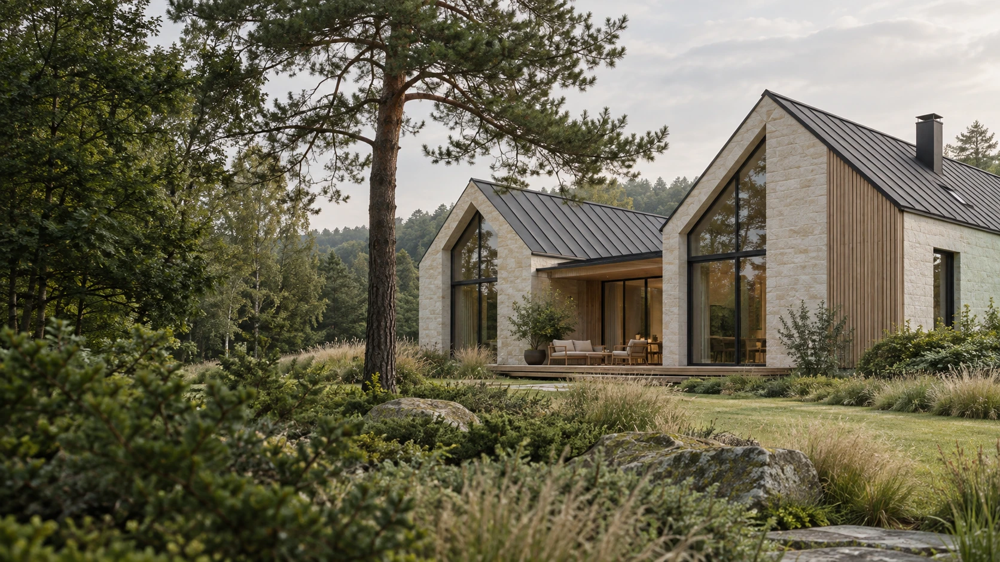
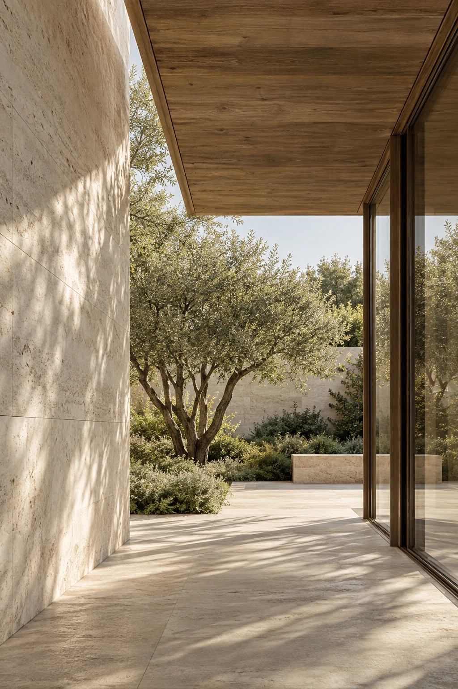

PRACOWNIA ARCHITEKTONICZNA · ŁÓDŹ
Architektura,
w której dobrze
się żyje.
Od pierwszego pomysłu do realizacji.
Z uważnością na przestrzeń i Twoje potrzeby.
Mała pracownia.
Duży potencjał.
Architektura, wnętrza i kompleksowa opieka nad inwestycją. Pracownia ArchiSfera działa od 2013 roku.
01 / WYBRANE PROJEKTY
Każda przestrzeń
ma swoją historię.
Od pustej działki i marzeń do spełnienia,
po nowe życie istniejących budynków.
DOMY · PRZEBUDOWY · WNĘTRZA · OBIEKTY USŁUGOWE
Archiwum projektów
Architektura, przebudowy i wnętrza pracowni ArchiSfera.
PEŁNY WYKAZ OPRACOWAŃ +

Kamila ChęcielewskaMGR INŻ. ARCHITEKT
ARCHISFERA / OD 201302 / PRACOWNIA
Dobra architektura
zaczyna się
od rozmowy.
Archisfera to mała pracownia, ale z dużym potencjałem, wiedzą, doświadczeniem i nowoczesnym podejściem do klienta.
Jako główny architekt podejmuję tematy, które wymagają działania na wielu płaszczyznach, a każdy, nawet najmniejszy projekt traktuję jako wyzwanie i okazję do realizacji osobistych ambicji.
DYPLOM ARCHITEKTA
POLITECHNIKA ŁÓDZKA
UPRAWNIENIA PROJEKTOWE
BEZ OGRANICZEŃ
POCZĄTEK DZIAŁALNOŚCI
PRACOWNI ARCHISFERA
03 / JAK MOGĘ POMÓC
Od pierwszej
kreski do ostatniego
detalu.
Wybierając pracownię Archisfera, otrzymujecie Państwo całkowitą opiekę nad powierzonym zadaniem — od koncepcji i rzetelnego projektu, po nadzór i wielobranżową koordynację.
Opowiedz o swojej inwestycji ↗01Projekty koncepcyjne
+
Wykonujemy analizy i koncepcje projektowe w oparciu o wytyczne Klienta, zapisy prawa, ustalenia z rzeczoznawcami ds. sanitarnych i przeciwpożarowych, a przede wszystkim po wnikliwej analizie otoczenia inwestycji i jego walorów.
Porozmawiajmy o projekcie ↗02Projekty budowlane wielobranżowe
+
Współpracujemy z szeregiem projektantów branżowych, zapewniamy obsługę w zakresie geologii, geodezji, dendrologii, rzeczoznawców ds. sanitarnych i przeciwpożarowych. Dzięki temu zapewniamy kompleksową obsługę niemal każdej inwestycji projektowej.
Reprezentujemy Inwestora we wszelkich urzędach, uzyskując niezbędne dokumenty, zgody, pozwolenia i decyzje.
Porozmawiajmy o projekcie ↗03Projekty technologiczne
+
Dzięki wiedzy i stałej współpracy z zespołem specjalistów i rzeczoznawców zapewniamy opracowania projektów technologicznych m.in. żłobków, przedszkoli, lokali gastronomicznych, obiektów służby zdrowia itp.
Porozmawiajmy o projekcie ↗04Wizualizacje budynków i wnętrz
+
Standardowo wykonujemy wizualizacje szkicowe zarówno brył budynków, jak i wnętrz. Na indywidualne zamówienie jesteśmy w stanie zapewnić wizualizacje fotorealistyczne.
Porozmawiajmy o projekcie ↗
Wierzę, że to, co robię, wpływa pozytywnie na jakość przestrzeni, w której żyjemy.KAMILA CHĘCIELEWSKA
04 / ZACZNIJMY OD TWOICH POTRZEB
Pierwszy krok
do Twojego projektu.
Porada, konsultacja czy pełny projekt?
Wybierz dobry punkt wyjścia.
01Wycena prac projektowych
0 zł+
Napisz maila: wskaż lokalizację działki i prześlij wytyczne projektowe.
biuro@archisfera.net ↗02Porada architektoniczna
200 zł brutto+
Doradztwo prawno-techniczne. Napisz maila i opisz swój problem. Otrzymasz odpowiedź z optymalnym rozwiązaniem.
biuro@archisfera.net ↗03Konsultacja architektoniczna
300 zł brutto+
Analiza przypadku. Napisz maila: opisz swój problem, wskaż lokalizację działki i prześlij dokumenty do analizy. Otrzymasz wnioski oraz optymalne rozwiązania.
biuro@archisfera.net ↗04Spotkanie z architektem
300 zł brutto / 1 godz.+
Spotkaj się z architektem w siedzibie biura, na miejscu planowanej inwestycji lub u siebie w domu.
Umów spotkanie ↗05Analiza możliwości zabudowy
400–1000 zł brutto+
Analiza na podstawie warunków zabudowy lub Miejscowego Planu Zagospodarowania Przestrzennego: dom jednorodzinny, zabudowa wielorodzinna, budynek użyteczności publicznej, budynek usługowy.
Napisz maila: wskaż lokalizację działki i prześlij wytyczne projektowe. Otrzymasz opracowanie z analizą oraz optymalne rozwiązania.
biuro@archisfera.net ↗CENY WEDŁUG OBECNEJ OFERTY PRACOWNI · ZAKRES PRAC PROJEKTOWYCH WYCENIANY INDYWIDUALNIE